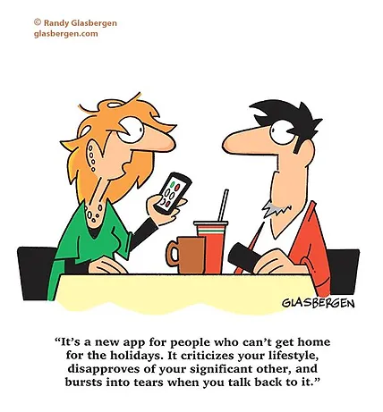

Article By: Ben Giumarra, Spillane Consulting Associates, Inc.
When regulatory requirements impact strategic or management action, our goal is to help business leaders make well-informed decisions.
Many institutions have avoided the potential risks of making non-qualified mortgage loans. Of course, there’s no universally correct answer to the question of whether to engage in non-QM lending. But as a consultant, the best I can hope for is that business leaders are well-advised when considering these types of decisions.
In this pursuit, I have a question when looking at industry strategy on non-QM issues – Why do some organizations with strict non-QM policies freely engage in higher-priced mortgage lending? Similarly, why do some organizations have extra safeguards (or higher pricing) for non-QM loans that don’t apply to higher-priced loans with QM status?
I wonder this because, from my perspective, the risk of a non-QM is fairly similar to the risk of a QM that happens to be “higher-priced.”
The Risk of Non-QM: Endless (and expensive) Argument
The general ability to repay (ATR) rule requires that a lender “makes a reasonable and good faith determination … that the consumer will have a reasonable ability to repay the loan.”
This is a scary argument to win against a borrower as the preemptively evil financial institution. Who knows what an individual judge or jury is going to think is “reasonable” or in “good faith”. Yikes! Mortgage underwriting isn’t something taught in high school courses anyway, but even if you get an educated group, there’s so much subjectivity here. Seems impossible to win easily without a big debate application.
QM Safe Haven
So the safe haven that QM provides from this is that, if you originate a loan with certain extra safe features (enough to make it a “qualified mortgage”), then a consumer cannot even raise the ATR argument, i.e., they never get to argue over whether the lender complied with the ATR rule. Instead it’s simple – did you pay your loan? No? Well then, you should. (And even here we already find foreclosure and mortgage actions frustratingly difficult to litigate).
Higher-Priced QM vs. Non-QM
But remember that QM provides a different level of protection for “higher-priced” loans. A higher-priced loan can still be a QM, but receives less protection.
Specifically, the rule provides for a “safe harbor for loans that are not higher-priced covered transactions” and that QM status is definitive proof that a lender “complies with the repayment ability requirements of [the ATR rule].” TILA 1026.43€ (1)(i). But there is merely a “presumption of compliance for higher-priced covered transactions” and here a lender is “presumed to comply the repayment ability requirements of [the ATR rule]” but the consumer has a chance to “rebut the presumption” by providing evidence that the lender “did not have a reasonable and good faith belief in the consumer’s repayment ability.”
If that sounds kind of circular, you’re right. The argument that will occur over a higher-priced QM is very similar to that of a non-QM. The only difference from a non-QM is that a court is supposed to require a higher level of proof to prove the ATR argument. In my opinion, that’s not a big help – it’s a tool for the lender’s lawyer to use in court, but, as we all know – if we have to take a case to court, then in many cases we’ve already lost – no matter the legal outcome.
So in conclusion, that’s why I think lenders should consider higher-priced QMs to be just as risky as non-QMs. Now, that might mean toughening up on higher-priced QM underwriting. But it might just as likely show a lender that its non-QM underwriting is too conservative. I’m not here to say which is right for your organization, just want you to make well-informed decisions.
In Other News
-
ARMCO, which provides QC and compliance software to the mortgage industry, announces new data validation tools that look pretty exciting. Glad that SCA has linked up with a company so strongly focused on the future. QC has always been an under-appreciated source of information for mortgage lenders trying to truly understand their performance. And the increasing digitization of QC makes it even easier to unlock and extract even more valuable information from this. I mean, check out the type of insights provided by ARMCO’s Mortgage QC Industry Trends report, available here.
-
CNBC reporting stories of American taking out mortgages to buy bitcoin??? Try to explain that to your 95-year old grandfather.
-
The CFPB has warned consumers about bitcoin for years – see 2014 press release – with Director Cordray encouraging caution and explaining bitcoin is “not backed by any government or central bank, and at this point consumers are stepping into the Wild Westwhen they engage in the market.” And it certainly seems like some of their initial concerns about hacking have proven correct – with hackers stealing $70 million in bitcoin this month and $65 million last year.
On My Mind …
It’s easier to be a good person if you spend time with good people. I’ve always counted myself lucky to be part of this industry and have the chance to learn so much from different people – both substantively and about being a good person. Who you are, and who you can become, depends on who you surround yourself with … your values, your character, your happiness, your success. And in my case one of the luckiest things to happen to me has been my opportunity to meet and work for John Spillane.
To show a little appreciation for what he’s meant to me, I put together a list of lessons (with some stories) that I’ve saved up from working with him. This became too long to include everything in this newsletter alone, so click here to read the separate document: “Lessons from John: From How to Tie Your Shoes to Using a Buzzsaw in the Office.”
– Steven Spielberg

Thanks so much for reading our weekly newsletters. We’re not always going to be perfect, but because we always do our best and try not to overpromise, we hope that we’re always going to be trustworthy. Your calls and e-mails are very helpful – please keep contributing.
**These are our opinions. We’re not authorized, or willing, to express those of others.**
Thank you to Ben Giumarra, Spillane Consulting Associates, Inc., a member of our Education Committee, who with the support of other experts at SCA have put together this newsletter.